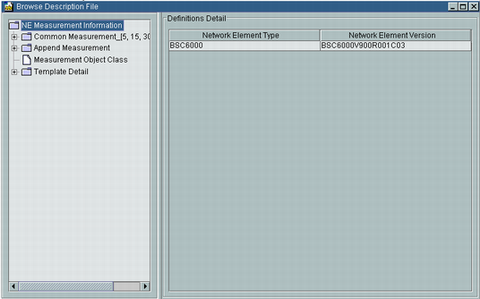
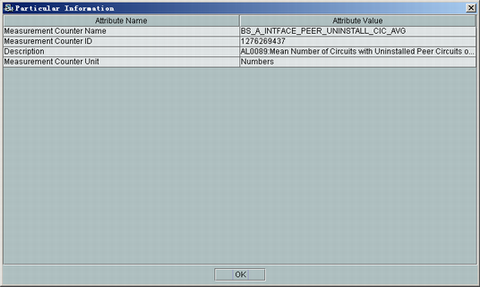

This describes how to browse the contents of the description files.
Prerequisites
- You have logged in to the performance browser tool.
- The parameters of description files are already configured.
Procedure
- In the home page of the performance browser tool, click , or click . A dialog box is displayed, as shown in Figure 1.
Figure 1 Browse Description File dialog box

- Select the node of the information to be queried from the navigation tree on the left of Figure 1.
- In the Definitions Detail area on the right side of Figure 1, view the details of the node, as shown in Figure 2.
Figure 2 Particular Information dialog box

Copyright © Huawei Technologies Co., Ltd.